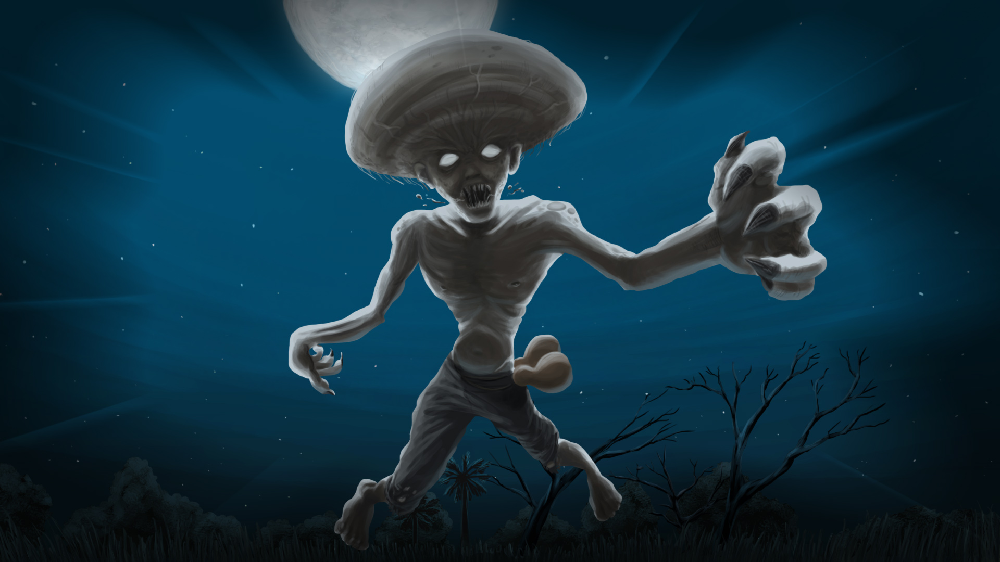
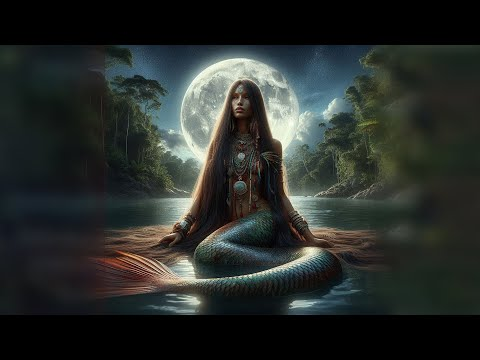
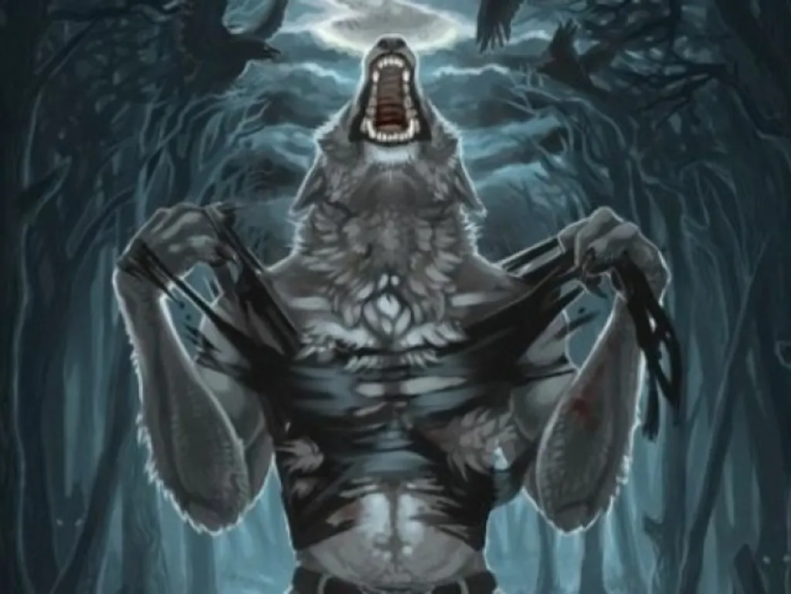
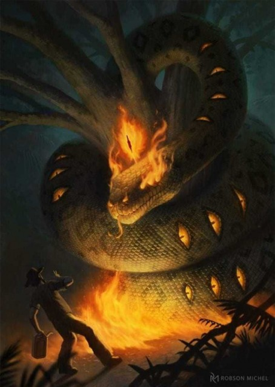
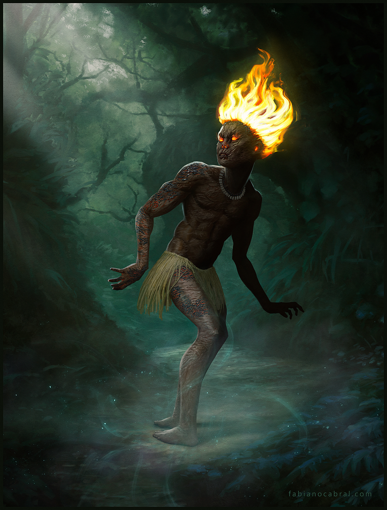

Cabeça de Cuia (Piauí)
Conta-se que um jovem chamado Crispim, após brigar com a mãe e atingi-la com um osso, foi amaldiçoado a se transformar em um monstro com uma grande cabeça. Desde então, vaga pelos rios devorando pessoas, especialmente moças chamadas Maria.

Iara (presente em todo o Brasil, mas muito contada no Nordeste)
Iara é uma bela mulher-peixe que vive nos rios e encanta os homens com seu canto. Quem a escuta é atraído para as águas e nunca mais volta. É símbolo da beleza e do perigo das águas.

Lobisomem do Sertão
Diz-se que um homem amaldiçoado se transforma em lobo nas noites de lua cheia. Ele vaga pelos povoados, uivando e assustando quem cruza seu caminho. A lenda é comum nas zonas rurais nordestinas.

Boitatá
Um enorme fogo que serpenteia pelos campos à noite. Diz a lenda que o Boitatá é o espírito protetor das matas, que pune quem destrói a natureza. Sua luz brilhante assusta e guia os viajantes perdidos.

Curupira
Um pequeno ser de cabelos vermelhos e pés virados para trás, guardião das florestas. Ele confunde caçadores e protege os animais. É uma das lendas mais antigas contadas pelos povos indígenas e muito popular no Nordeste.
